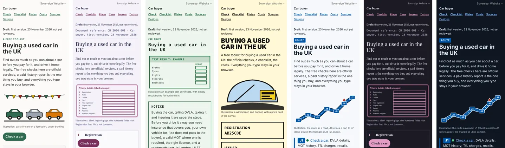

Synthetic users: Car Buyer, round 9 (the drawings redrawn)
Site: https://car-buyer.tool.sovereignweb.site/ at 3f08b2d (v0.1.10). Run: 23 November 2026, about 18:05 UTC, by design.b.rounds. Use it: 5 of 5. Show a friend: 5 of 5 (the first time). Look 3.4 (4, 4, 3, 3, 3). Home page: five ideas, by 5 of 5. Checklist: five skins, by 5 of 5 (five ideas by 3 of 5 in round 8). Nobody said "wow". The review.
The same personas and captures as round 8. These are simulations, and never replace the measured checks or a real person. The checklist went from 3 of 5 "ideas" to 5 of 5 "skins" with no change to it, so that verdict sits at the noise line.
| Persona | Use? | Friend? | Look | Best | On the drawings |
|---|---|---|---|---|---|
| First-time buyer | yes | yes | 4 | Windscreen card | "The windscreen looks more like a dial than a windscreen, and the 'price card' has no price on it." |
| Parent | yes | yes | 4 | Road atlas | "The MOT certificate drawing ... could make a teenager think the site gives an MOT result. And the PASS label on a self-tick gives false comfort." |
| Londoner | yes | yes | 3 | MOT certificate | The London triangle "sits at J6, after 'Pay' at J5. That is the wrong moment to find out." |
| Low-vision reader | yes | yes | 3 | Windscreen card | "the field labels in design 2's logbook drawing are very small and thin." |
| Design critic | yes | yes ("for the substance rather than the look") | 3 | Road atlas | "The road atlas is the only drawing that carries information." |
Best-design votes: Windscreen card 2, Road atlas 2, MOT certificate 1.
